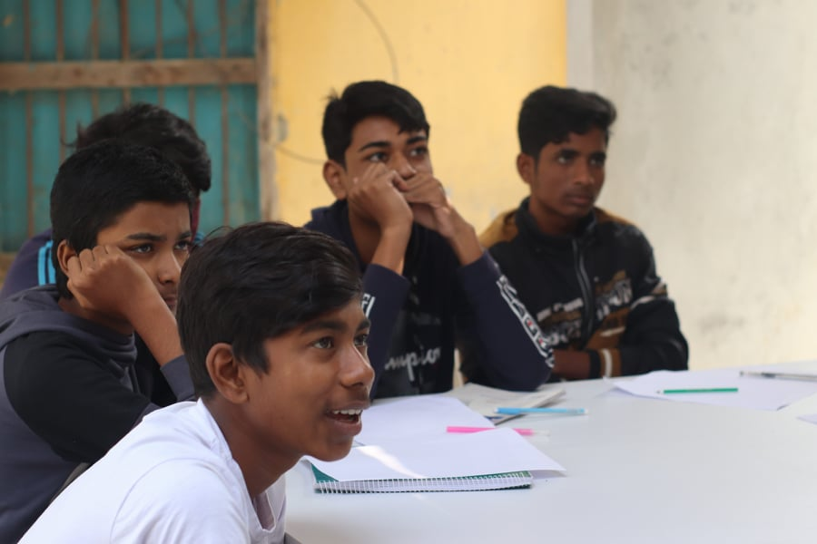

Our aim is to build a self-sustaining ecosystem that will shape our youths’ future with innovation driven practical skills. TARS Engineering School has built a structure that will not only make our youths self-motivated & skill driven but also help to create values for a more compassionate community. That will help them to secure their dreams and achievements. As the name suggests, we are mainly focused on Technical Learning, Business Learning, Software skills including ethical learning also. This overall process through capacity building will make the community empowered and self-dependent. As per the design, when the educational plan of TARS Engineering School is successful, a number of students and enthusiasts will be acquired who will be skilled in technical skills as basic programming, web development, robotics, IoT and work-ethics, from the rural areas of Bangladesh. In their young ages they will be prepared to work in the IT sector fulltime or part-time, besides their regular education.
This overall process through capacity building will make the community empowered and self-dependent. As per the design, when the educational plan of TARS Engineering School is successful, a number of students and enthusiasts will be acquired who will be skilled in technical skills as basic programming, web development, robotics, IoT and work-ethics, from the rural areas of Bangladesh. In their young ages they will be prepared to work in the IT sector fulltime or part-time, besides their regular education. As per the design, when the educational plan of TARS Engineering School is successful, a number of students and enthusiasts will be acquired who will be skilled in technical skills as basic programming, web development, robotics, IoT and work-ethics, from the rural areas of Bangladesh. In their young ages they will be prepared to work in the IT sector fulltime or part-time, besides their regular education.
It is evident from the current scenario of technical education in Bangladesh that there is an absence of a proper education structure that can meet the practical needs of youth in those areas. If they can be provided with more vocational and skill-based education from earlier phases of their education, they can make themselves able to meet the financial needs of their family and themselves. There’s where TARS Engineering School steps in, making a complete structure of skill-driven education that can be provided to students in the rural areas besides their regular education in school and madrasas. The plan and design TES suggests appear to be promising in solving the current situation and also coming up with an ecosystem that may bring up more technical persons for bigger work-force.
When we look upon the enormous potential our country holds in the young population, we find the motivation to risk and push forward to bring about more initiatives like this that can provide them the opportunity they deserve.